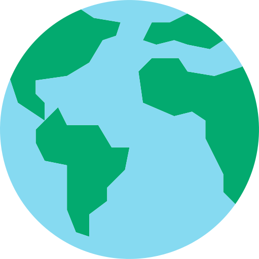

WILDLIFE STORIES


The Rottnest Island Quokka population has become very accustomed to humans. In recent years in particular, 'Quokka selfies' have become popular with tourists especially since tennis superstar Roger Federer and a Quokka starred in a government advertising campaign for the island, and Australian actor Chris Hemsworth shared his Quokka selfies online.
Quokkas give birth just 27 days after mating. The tiny, pink, hairless and blind joey then finds its way to its mother’s pouch where it stays for around six months. If the joey doesn’t survive, the mother can give birth to another one shortly after because she has others in her womb in a suspended state of development as back-up in case tragedy befalls the older joey.
Quokkas are herbivores that eat a variety of grasses and shrubs. When food is scarce they can draw on stored fat in their tails for energy to get them through. As travellers to the island might know, fresh water is in short supply on Rottnest so it’s just as well that Quokkas can survive on very little of it – lasting up to a month without a drink.
Studies have shown that the Quokkas found close to the human settlements on the east end of Rottnest are the social outcasts of the wild population. Scrounging for junk food high in salt left by island visitors can really dehydrate these individuals worsening their health. So - you guessed it - DON'T FEED THE QUOKKAS!
The Rottnest Island Quokka population has become very accustomed to humans. In recent years in particular, 'Quokka selfies' have become popular with tourists especially since tennis superstar Roger Federer and a Quokka starred in a government advertising campaign for the island, and Australian actor Chris Hemsworth shared his Quokka selfies online.
Quokkas give birth just 27 days after mating. The tiny, pink, hairless and blind joey then finds its way to its mother’s pouch where it stays for around six months. If the joey doesn’t survive, the mother can give birth to another one shortly after because she has others in her womb in a suspended state of development as back-up in case tragedy befalls the older joey.
Quokkas are herbivores that eat a variety of grasses and shrubs. When food is scarce they can draw on stored fat in their tails for energy to get them through. As travellers to the island might know, fresh water is in short supply on Rottnest so it’s just as well that Quokkas can survive on very little of it – lasting up to a month without a drink.
Studies have shown that the Quokkas found close to the human settlements on the east end of Rottnest are the social outcasts of the wild population. Scrounging for junk food high in salt left by island visitors can really dehydrate these individuals worsening their health. So - you guessed it - DON'T FEED THE QUOKKAS!